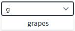
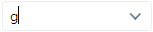
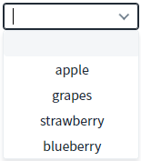
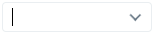
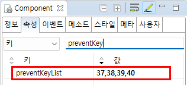

AutoComplete의 'preventKeyList' 속성을 사용하여, 검색어 입력 필드에서 특정 키의 동작(목록 검색, 목록 확장 등)을 방지하는 예제입니다.
검색어 입력창에서 'g' 또는 's'를 입력 시 목록 검색 방지하기
검색어 입력창에서 방향키(아래)를 눌렀을 때 목록 확장 방지하기
설정이 되지 않은 기본 컴포넌트와 '특정 키 동작 방지'가 설정된 컴포넌트로 구성되어있습니다. 각각의 컴포넌트에 키를 입력하여 목록이 출력된 결과를 비교합니다.
예제 영역 '모든 키 동작 허용'에 구성된 AutoComplete의 입력 필드에 'g'를 입력합니다. 목록에 항목 'grapes'가 표시됩니다.
Image 1.브라우저(Chrome) 실행 예시 - 기본 설정의 g키 입력

예제 영역 '특정 키(g,s) 동작 방지'에 구성된 AutoComplete의 입력 필드에 'g'를 입력합니다. 목록에 항목이 표시되지 않습니다.
Image 2.브라우저(Chrome) 실행 예시 - "특정 키(g,s) 동작 방지"의 g키 입력

예제 영역 '방향키의 목록 확장 기능 방지'에 구성된 AutoComplete의 입력 필드에 아래(down) 방향 키를 입력합니다. 목록이 표시됩니다.
Image 3.브라우저(Chrome) 실행 예시 - 기본 설정의 아래(down) 방향키 입력

예제 영역 '모든 키 동작 허용'에 구성된 AutoComplete의 입력 필드에 아래(down) 방향 키를 입력합니다. 목록이 표시되지 않습니다.
Image 4.브라우저(Chrome) 실행 예시 - '방향키의 목록 확장 기능 방지'의 아래(down) 방향키 입력

컴포넌트의 'preventKeyList' 속성에 '37,38,39,40'를 입력합니다. (37=left,38=up,39=right,40=down)
Image 5.웹스퀘어 스튜디오의 Component View 예시

Example 1.Source
<!-- autoComplete의 소스 본문 예시 --> <w2:autoComplete preventKeyList="37,38,39,40"> <!-- 중략 --> </w2:autoComplete>
컴포넌트의 'preventKeyList' 속성에 '13'를 입력합니다. (13=enter)
Example 2.Source
<!-- autoComplete의 소스 본문 예시 --> <w2:autoComplete preventKeyList="13"> <!-- 중략 --> </w2:autoComplete>
preventKeyList